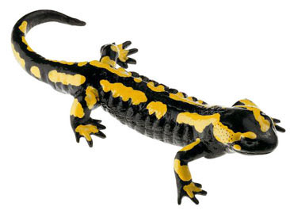

Salamandra
- Nombre cientifico: Salamandra salamandra
- Origen:El noroeste de Africa, sudeste de Asia, America del Norte, America Central, America del Sur y tambien la encontramos en el centro y el sur de Europa.
- Cantidad: 12
- Caracteristicas: Adultos de entre 18 y 25 cm incluyendo la cola, siendo las hembras algo mayores. En casos excepcionales pueden llegar a 28 o mas de 30 cm. Cuerpo grueso y cola relativamente corta, sin cresta dorsal ni caudal. Glándulas parotideas bien visibles en la cabeza
- Alimentacion:Las lombrices de tierra son un gran platillo para ellas, aunque tambien le gustan las babosas, los escarabajos, los cienpies pequeños, algunos insectos, por lo general los invertebrados de cuerpo blando son sus preferidos. La salamandra tiene capacidad de pasar semanas sin comer.
- Reproduccion:Los partos tienen lugar a partir del otoño y hasta finales de la primavera dependiendo de la geografia y el clima. Las larvas tardan entre 2 y 6 meses en desarrollarse.
- Estado de conservación:No se encuentra en peligro de extinción